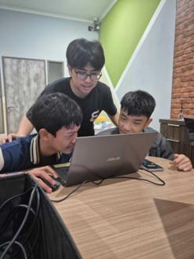

Education
Teaching Experience
STEM Education Initiative
Teaching activities involving coding, mathematics, and robotics, helping learners build confidence and problem-solving skills.
Coding
Mathematics
Robotics
Teaching
Visit Live Project ↗